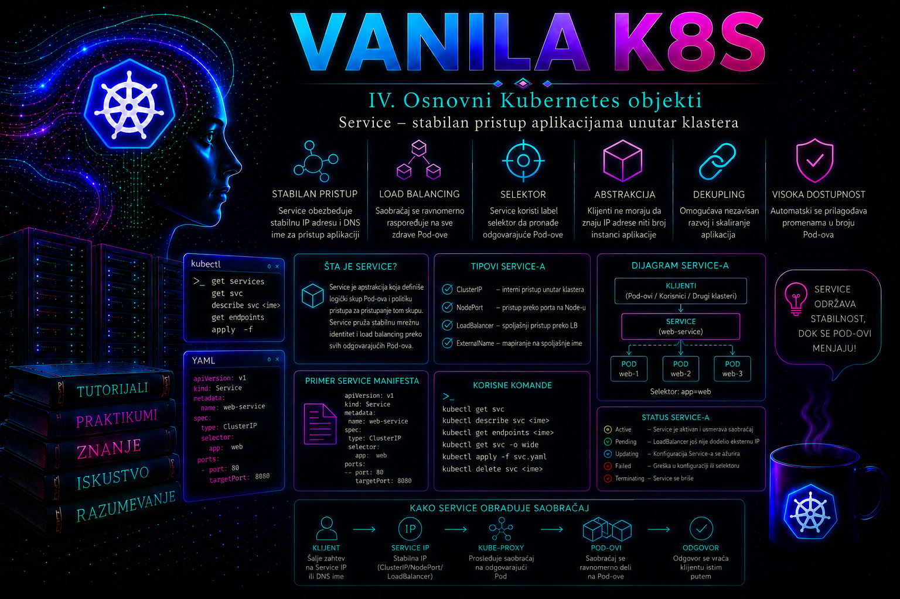

Vanilla Kubernetes

Podovi u Kubernetes klasteru nisu trajne mrežne tačke. Njihove IP adrese mogu da se promene nakon ponovnog kreiranja, skaliranja, premeštanja na drugi worker čvor ili zamene tokom rollout procesa. Aplikacija koja bi direktno koristila IP adrese pojedinačnih Podova morala bi neprekidno da prati te promene, što bi povezivanje servisa učinilo nepouzdanim i operativno teško održivim. Kubernetes objekat Service rešava taj problem tako što grupi odgovarajućih Podova dodeljuje stabilno ime, virtuelnu IP adresu i jedan ili više mrežnih portova.
Service ne pokreće kontejnere i ne kontroliše njihov životni ciklus. Njegova uloga je da pronađe dostupne backend krajnje tačke i da saobraćaj usmeri ka njima. Deployment upravlja verzijama i brojem Podova, dok Service predstavlja stabilnu pristupnu tačku koja ostaje ista tokom skaliranja, zamene Podova i većine aplikativnih rollout operacija. Zbog toga je pravilno povezivanje Deployment, Service, EndpointSlice, DNS i mrežnog sloja jedna od osnovnih administratorskih veština u Kubernetes okruženju.
Zašto aplikacijama nije dovoljan direktan pristup Podovima
Svaki Pod u uobičajenom Kubernetes mrežnom modelu dobija sopstvenu IP adresu. Međutim, Pod je potrošni izvršni objekat. Kada Deployment zameni Pod, novi Pod dobija novi identitet i najčešće novu adresu. Čak i kada aplikacija trenutno ima samo jednu repliku, direktno upisivanje njene Pod IP adrese u konfiguraciju klijenta stvara skrivenu zavisnost od objekta koji nije projektovan kao stalna mrežna tačka.
Service odvaja identitet aplikacije od identiteta pojedinačnih instanci. Klijent koristi DNS ime kao što je web-portal ili potpuno kvalifikovano ime web-portal.it-tutorijali.svc.cluster.local, dok Kubernetes u pozadini održava skup Podova koji trenutno mogu da obrade zahtev. Kada se replika ukloni ili nova postane spremna, menja se lista krajnjih tačaka, ali se ime i Service IP adresa ne menjaju.
Ova apstrakcija nije samo pogodnost. Ona omogućava kontrolisane rollout procese, horizontalno skaliranje, zamenu neispravnih instanci, raspodelu zahteva i odvajanje timova koji razvijaju klijentsku i serversku komponentu. Klijentska aplikacija treba da zna ugovoreni naziv i port servisa, a ne trenutnu topologiju Podova.
Kako Service pronalazi backend Podove
Najčešći Service koristi polje spec.selector. Selektor se poredi sa labelama Podova, a kontrolna ravan na osnovu poklapanja održava objekte EndpointSlice. EndpointSlice sadrži mrežne adrese backend instanci, njihove portove, stanje spremnosti i druge podatke potrebne mrežnim komponentama. U savremenim Kubernetes verzijama EndpointSlice je standardni skalabilni mehanizam za predstavljanje krajnjih tačaka servisa; stariji objekat Endpoints više nije primarni model za velike skupove backend adresa.
Veza između Service objekta i Podova nije vlasnička veza. Service ne kreira Podove, ne popravlja ih i ne garantuje da izabrane aplikacije zaista slušaju na deklarisanom portu. On samo bira Podove čije labele odgovaraju selektoru. Zbog toga je pogrešan selektor jedna od najčešćih grešaka: Service postoji, DNS ime se razrešava i virtuelna IP adresa je dodeljena, ali EndpointSlice nema nijednu upotrebljivu adresu.
spec:
selector:
app.kubernetes.io/name: web-portal
app.kubernetes.io/instance: production
Oba uslova selektora moraju da odgovaraju labelama Poda. Selektor ne podržava sve izraze dostupne kod nekih drugih Kubernetes objekata; Service koristi mapu jednakosti. Administrator zato pre primene proverava stvarne labele komandom kubectl get pods --show-labels i ne pretpostavlja da se naziv Deployment objekta automatski podudara sa Service selektorom.
Service port, targetPort i imenovani portovi
Polje port predstavlja port na kojem klijent pristupa Service objektu. Polje targetPort određuje port backend Poda na koji se zahtev prosleđuje. Te vrednosti mogu biti iste, ali to nije obavezno. Na primer, aplikacija može da sluša na portu 8080, dok Service klijentima izlaže port 80.
ports:
- name: http
protocol: TCP
port: 80
targetPort: http
targetPort može biti broj ili naziv porta deklarisan u specifikaciji kontejnera. Imenovani portovi su korisni tokom promene verzije aplikacije. Jedna verzija Poda može port http mapirati na 8080, a druga na 8081, dok Service konfiguracija ostaje nepromenjena. Naziv mora biti dosledan u svim Podovima koje Service bira.
Service podržava TCP, UDP i SCTP, u skladu sa mogućnostima klastera i mrežnih komponenti. Jedan Service može imati više portova, ali svaki port tada mora imati jedinstveno ime. Service ne proverava aplikativni protokol. Deklaracija porta kao TCP ne potvrđuje da backend zaista pruža HTTP uslugu niti da će TLS rukovanje biti uspešno.
ClusterIP i virtuelna pristupna tačka
Podrazumevani tip je ClusterIP. Kontrolna ravan Service objektu dodeljuje virtuelnu adresu iz opsega namenjenog servisima. Ta adresa obično nije vezana za fizički mrežni interfejs i ne predstavlja zaseban proces koji prihvata konekcije. Mrežni mehanizam na čvorovima presreće saobraćaj namenjen Service adresi i preusmerava ga ka jednoj od odgovarajućih krajnjih tačaka.
U standardnoj implementaciji tu funkciju obavlja kube-proxy, koji prati Service i EndpointSlice objekte i programira pravila na svakom čvoru. Linux klaster može koristiti iptables ili nftables režim, zavisno od verzije i konfiguracije. Nftables režim je stabilan od Kubernetes 1.33, zahteva Linux kernel 5.13 ili noviji i u velikim klasterima efikasnije obrađuje promene endpointa. IPVS je važan za razumevanje postojećih instalacija, ali je od Kubernetes 1.35 deprecated i za nove implementacije ne treba ga birati bez dokumentovanog razloga. Neke CNI implementacije koriste sopstveni eBPF ili drugi dataplane i mogu u potpunosti zameniti kube-proxy. Administrator zato ne sme automatski zaključiti da odsustvo kube-proxy Poda predstavlja kvar, već prvo mora proveriti referentnu arhitekturu klastera i podršku izabrane CNI implementacije.
Prelazak sa iptables na nftables nije samo zamena sintakse. Nftables podrazumevano ograničava NodePort na primarne adrese čvora, ne omogućava NodePort preko loopback adrese i ne dodaje automatski firewall accept pravila. Zato se pre migracije proveravaju nodePortAddresses, lokalni firewall, monitoring konekcija i kompatibilnost CNI dodatka; ručna promena proxy režima bez testa i plana povratka može prekinuti pristup većem broju servisa.
Virtuelna IP adresa je stabilna tokom životnog veka Service objekta, ali se ne sme tretirati kao trajni poslovni identifikator izvan klastera. Brisanje i ponovno kreiranje Service objekta može dodeliti drugu adresu. Aplikacije treba da koriste DNS ime, a statičko zadavanje clusterIP treba primenjivati samo kada postoji dokumentovana infrastrukturna potreba i kontrola kolizija unutar servisnog CIDR opsega.
Kubernetes DNS i otkrivanje servisa
Klaster-aware DNS komponenta, najčešće CoreDNS, prati Kubernetes API i objavljuje zapise za Service objekte. Pod u istom namespace-u može Service web-portal pronaći kratkim imenom. Pod iz drugog namespace-a koristi najmanje web-portal.it-tutorijali, dok potpuno kvalifikovano ime tipično glasi web-portal.it-tutorijali.svc.cluster.local. Završni domen može biti drugačiji ako je klaster konfigurisan sa nestandardnim cluster domain parametrom.
Za običan ClusterIP Service DNS vraća njegovu virtuelnu adresu. DNS zato ne menja adresu pri svakom skaliranju aplikacije. Endpoint promene obrađuje mrežni dataplane. Ako DNS upit ne uspe, administrator razdvaja najmanje četiri mogućnosti: pogrešno ime ili namespace, problem u Pod DNS konfiguraciji, nedostupan CoreDNS Service ili problem samih CoreDNS Podova i njihovog pristupa API serveru.
DNS razrešavanje nije dokaz da aplikacija radi. Uspešan nslookup potvrđuje da ime postoji i da je DNS putanja funkcionalna. Tek povezivanje na Service port i validan aplikativni odgovor potvrđuju funkcionalnost celog lanca.
Za imenovane Service portove DNS može objaviti i SRV zapise. Uobičajeni Podovi koriste politiku ClusterFirst; Pod sa hostNetwork: true koji treba klastersko razrešavanje obično mora eksplicitno koristiti ClusterFirstWithHostNet. Pri dijagnostici se zato čitaju /etc/resolv.conf, spec.dnsPolicy i stvarni cluster domain, a ne pretpostavlja se da je svuda cluster.local.
Spremnost Poda i upravljanje krajnjim tačkama
Readiness probe ima neposredan uticaj na Service saobraćaj. Pod koji postoji i ima status Running ne mora biti spreman da prima zahteve. Ako readiness provera nije uspešna, krajnja tačka se označava kao nespremna i uobičajeni Service saobraćaj se ne usmerava ka njoj. To omogućava da aplikacija završi inicijalizaciju, učita konfiguraciju ili uspostavi zavisnosti pre nego što postane deo aktivnog skupa.
Pogrešno podešena readiness provera može proizvesti dva suprotna problema. Previše blaga provera uključuje Pod koji još ne može pouzdano da obrađuje zahteve. Previše stroga ili pogrešna provera uklanja ispravne Podove i ostavlja Service bez dostupnih backend krajnjih tačaka. Administrator upoređuje stanje Podova, readiness događaje, EndpointSlice uslove i aplikativne logove, umesto da se oslanja samo na kolonu STATUS.
Tipovi Service objekata
| Tip | Namena | Administratorska napomena |
|---|---|---|
| ClusterIP | Pristup unutar klastera preko virtuelne IP adrese i DNS imena. | Podrazumevani i najbezbedniji izbor za interne aplikativne veze. |
| NodePort | Izlaže Service na portu svakog odgovarajućeg čvora. | Zahteva mrežnu i firewall kontrolu; retko je konačno enterprise rešenje za javni pristup. |
| LoadBalancer | Traži integraciju sa spoljnim ili internim load balancer sistemom. | Ponašanje, adresa, health check i trošak zavise od cloud ili on-prem implementacije. |
| ExternalName | Objavljuje DNS CNAME ka spoljašnjem imenu. | Nema selector, ClusterIP ni proxy prosleđivanje; aplikativni protokoli mogu biti osetljivi na razliku u imenu. |
NodePort gradi se iznad ClusterIP mehanizma i otvara port iz konfigurisanog NodePort opsega, podrazumevano najčešće 30000–32767. Klijent pristupa kombinaciji adrese čvora i dodeljenog porta. To može biti korisno kao infrastrukturni međusloj ili za ograničene laboratorijske scenarije, ali direktno izlaganje svih čvorova povećava napadnu površinu i zahteva precizna firewall pravila.
LoadBalancer ne kreira univerzalni load balancer samostalno. Potreban je cloud controller ili kompatibilna on-prem komponenta koja zna kako da obezbedi adresu i programira mrežnu infrastrukturu. Ako takva integracija ne postoji, Service može ostati sa statusom EXTERNAL-IP pending. To nije kvar aplikacije, već simptom da infrastrukturni kontroler nije instaliran, nema ovlašćenja ili ne može da zadovolji zahtev.
Service nije zamena za HTTP reverse proxy, Ingress ili Gateway API. ClusterIP i NodePort rade prvenstveno na transportnom sloju i ne obezbeđuju napredno rutiranje prema host imenu, URL putanji, HTTP zaglavlju ili težinskoj raspodeli verzija. Za takve zahteve potreban je odgovarajući gateway ili ingress kontroler.
Headless Service i servisi bez selektora
Headless Service se definiše sa clusterIP: None. On nema virtuelnu ClusterIP adresu i kube-proxy za njega ne obezbeđuje standardno balansiranje. DNS može vratiti adrese pojedinačnih krajnjih tačaka, što omogućava klijentu da direktno otkrije članove skupa. Ovaj model je važan za StatefulSet, baze podataka, klasterisane aplikacije i protokole kod kojih klijent mora da zna identitet pojedinačnog člana.
Headless Service nije „brži ClusterIP” koji treba koristiti bez razloga. Klijent preuzima odgovornost za izbor i ponovno povezivanje sa krajnjim tačkama, a DNS keširanje može uticati na brzinu uočavanja promena. Za uobičajenu stateless web aplikaciju standardni ClusterIP je jednostavniji i operativno sigurniji.
Service može postojati i bez selektora. Administrator tada ručno ili putem drugog kontrolera održava EndpointSlice koji upućuje na odredište izvan skupa Podova. To je korisno za kontrolisanu migraciju spoljnog sistema ili predstavljanje postojeće interne usluge kroz Kubernetes DNS. Takvo rešenje zahteva strogu dokumentaciju, jer Kubernetes ne može automatski da proveri životni ciklus spoljnog odredišta niti da popravi zastarelu adresu.
Ručno održavan EndpointSlice mora imati labelu kubernetes.io/service-name jednaku imenu Service objekta i preporučenu labelu endpointslice.kubernetes.io/managed-by koja identifikuje vlasnika automatizacije. Endpoint adrese ne smeju biti loopback, link-local niti ClusterIP drugog Service objekta. API server iz bezbednosnih razloga ne dozvoljava kubectl port-forward service/... ka endpointima koji nisu mapirani na Podove, pa se taj postupak ne koristi kao test servisa bez selektora.
EndpointSlice kao operativni izvor istine
Jedan Service može imati više EndpointSlice objekata. Kontroler podrazumevano kreira novi slice kada postojeći slice-ovi dostignu približno 100 endpointa i pojavi se sledeći endpoint; ta granica se može konfigurisati. Administrator zato ne sme proveriti samo prvi objekat niti iz broja slice-ova izvoditi broj backend instanci. Potrebno je objediniti sve objekte sa labelom kubernetes.io/service-name i analizirati addressType, portove, adrese, conditions.ready, conditions.serving, conditions.terminating, kao i nodeName i zone kada se istražuje topologija.
Legacy objekat Endpoints je od Kubernetes 1.33 deprecated. Ne podržava dual-stack niti novije podatke za usmeravanje, a preko 1000 endpointa njegov sadržaj se skraćuje i dobija anotaciju endpoints.kubernetes.io/over-capacity: truncated. Postojeći alati koji i dalje čitaju Endpoints moraju se evidentirati i migrirati na discovery.k8s.io/v1 EndpointSlice API; u suprotnom monitoring ili eksterni load balancer može videti samo deo backend skupa iako Kubernetes dataplane koristi sve EndpointSlice objekte.
Raspodela saobraćaja, afinitet i saobraćajne politike
Izraz „load balancing” kod Service objekta ne znači nužno ravnomernu raspodelu svakog HTTP zahteva. Raspodela zavisi od mrežnog dataplane-a, protokola, trajanja konekcije, connection tracking mehanizma i ponašanja klijenta. Dugotrajna TCP konekcija ostaje vezana za izabranu krajnju tačku, pa broj zahteva po Podu može biti nejednak čak i kada je broj konekcija prihvatljivo raspoređen.
sessionAffinity: ClientIP pokušava da zahteve sa iste klijentske IP adrese usmerava ka istom backendu u okviru podešenog vremenskog perioda. Ova opcija nije zamena za pravilno projektovano upravljanje sesijom. NAT, proxy slojevi i veliki broj korisnika iza iste adrese mogu izazvati neravnomernu raspodelu. Za pouzdane aplikacije poželjnije je čuvanje sesije u zajedničkom skladištu ili korišćenje tokena koji ne zavise od konkretne replike.
internalTrafficPolicy: Local ograničava interni Service saobraćaj na lokalne krajnje tačke čvora. To može smanjiti međučvornu komunikaciju i latenciju, ali će zahtev sa čvora bez lokalnog spremnog endpointa biti odbačen umesto prosleđen na drugi čvor. Opcija se zato koristi samo kada aplikativni model, raspored Podova i monitoring jasno podržavaju takvo ponašanje. Slična razmatranja važe za externalTrafficPolicy kod spoljnog saobraćaja.
Polje trafficDistribution daje smernicu za preferiranje topološki bližih endpointa, ali njegova raspoloživost i konkretne vrednosti zavise od Kubernetes verzije i feature gate-ova. Ono je preferencija, dok internalTrafficPolicy: Local predstavlja strogo ograničenje. Pre produkcione primene proveravaju se API šema konkretne verzije komandom kubectl explain service.spec.trafficDistribution, podrška dataplane-a, raspored replika po zonama i ponašanje pri gubitku cele zone.
Bezbednost i ograničenja Service objekta
Service objavljuje putanju do aplikacije, ali sam po sebi nije firewall. Ako mrežna politika nije primenjena, drugi Podovi mogu imati pristup Service adresi ili direktnim Pod adresama, zavisno od mrežne arhitekture. NetworkPolicy se primenjuje na Pod saobraćaj i zahteva CNI implementaciju koja tu funkciju podržava. Kreiranje NetworkPolicy objekta u klasteru čiji CNI ne sprovodi politike može stvoriti lažan osećaj zaštite.
Service takođe ne obezbeđuje autentifikaciju, autorizaciju, TLS terminaciju, rate limiting niti validaciju sadržaja. Te funkcije pripadaju aplikaciji, service mesh-u, gateway sloju ili drugim kontrolama. Administrator mora da zna granicu odgovornosti: činjenica da je Service tipa ClusterIP smanjuje direktnu spoljnu izloženost, ali ne čini aplikaciju automatski bezbednom od drugih workload-a u klasteru.
Integrisani praktikum: interni Service za produkcioni web portal
Poslovni i tehnički kontekst. Interni portal za operativne timove pokreće se kao Deployment sa tri replike u namespace-u it-tutorijali. Portal treba da bude dostupan drugim aplikacijama unutar klastera preko stabilnog DNS imena, dok direktan spoljni pristup nije dozvoljen. Service će izlagati port 80 i prosleđivati zahteve na imenovani kontejnerski port 8080.
Cilj. Implementirati ClusterIP Service web-portal, potvrditi da bira samo spremne Podove, proveriti DNS i HTTP pristup, namerno izazvati grešku selektora, dijagnostikovati je i bezbedno vratiti ispravnu konfiguraciju.
Referentno okruženje. Višečvorni vanilla Kubernetes klaster sa funkcionalnim CNI dodatkom, CoreDNS servisom, Storage nezavisnim workload-om i kubectl klijentom usklađenim sa podržanom verzijom API servera. Radni fajlovi čuvaju se u direktorijumu ~/vanilla-k8s/lesson-19.
Potrebna prava. Korisnik mora imati pravo za čitanje namespace-a, Podova, Deployment, Service i EndpointSlice objekata, kao i kreiranje, izmenu i brisanje Deployment, Service i privremenog test Poda u namespace-u it-tutorijali. Čitanje CoreDNS i kube-proxy logova u kube-system namespace-u nije neophodno za redovnu implementaciju i treba ga dodeliti samo administratorima zaduženim za klastersku dijagnostiku.
Preduslovi. API server mora biti dostupan, svi planirani worker čvorovi moraju biti u stanju Ready, a CoreDNS Podovi moraju biti spremni. Primer koristi javnu kontejnersku sliku samo za edukativni scenario; u produkciji slika treba da bude skenirana, odobrena i preuzimana iz kontrolisanog internog registra.
-
Priprema radnog direktorijuma i početna provera klastera.
Direktorijum se kreira pre svih manifest fajlova. Zatim se proveravaju aktivni kontekst, čvorovi i DNS komponenta kako se promena ne bi slučajno izvršila u pogrešnom klasteru.
Validacija: očekuje se tačno identifikovan kontekst, uspešan odgovor API servera, stanjemkdir -p ~/vanilla-k8s/lesson-19 cd ~/vanilla-k8s/lesson-19 kubectl config current-context kubectl cluster-info kubectl get nodes kubectl -n kube-system get pods -l k8s-app=kube-dnsReadyza čvorove i najmanje jedan spreman DNS Pod. Svako odstupanje mora se rešiti pre aplikativne promene. -
Kreiranje namespace manifesta.
Namespace odvaja objekte lekcije od drugih workload-a i omogućava precizniju RBAC i NetworkPolicy kontrolu.
Validacija:cat > 00-namespace.yaml <<'EOF' apiVersion: v1 kind: Namespace metadata: name: it-tutorijali labels: app.kubernetes.io/part-of: it-tutorijali EOF kubectl apply -f 00-namespace.yaml
Svi zahtevi potrebni za praktikum treba da vratekubectl get namespace it-tutorijali kubectl auth can-i create services -n it-tutorijali kubectl auth can-i create deployments.apps -n it-tutorijali kubectl auth can-i create pods -n it-tutorijaliyes. Odgovornozahteva eskalaciju vlasniku RBAC politike, a ne korišćenje privilegovanijeg naloga bez odobrenja. -
Definisanje aplikativnog Deployment objekta.
Tri replike koriste dosledne labele. Readiness provera sprečava da Service usmerava saobraćaj ka instanci koja još ne odgovara na HTTP zahteve.
Validacija:cat > 10-web-portal-deployment.yaml <<'EOF' apiVersion: apps/v1 kind: Deployment metadata: name: web-portal namespace: it-tutorijali labels: app.kubernetes.io/name: web-portal app.kubernetes.io/instance: production spec: replicas: 3 selector: matchLabels: app.kubernetes.io/name: web-portal app.kubernetes.io/instance: production template: metadata: labels: app.kubernetes.io/name: web-portal app.kubernetes.io/instance: production spec: containers: - name: web image: nginx:1.27-alpine ports: - name: http containerPort: 8080 protocol: TCP command: - /bin/sh - -c args: - | cat > /etc/nginx/conf.d/default.conf <<'NGINX' server { listen 8080; location / { default_type text/plain; return 200 "web-portal ready\n"; } location /healthz { default_type text/plain; return 200 "ok\n"; } } NGINX exec nginx -g 'daemon off;' readinessProbe: httpGet: path: /healthz port: http initialDelaySeconds: 2 periodSeconds: 5 timeoutSeconds: 2 failureThreshold: 3 livenessProbe: httpGet: path: /healthz port: http initialDelaySeconds: 10 periodSeconds: 10 timeoutSeconds: 2 failureThreshold: 3 resources: requests: cpu: 25m memory: 32Mi limits: cpu: 200m memory: 128Mi EOF kubectl apply -f 10-web-portal-deployment.yaml kubectl -n it-tutorijali rollout status deployment/web-portal --timeout=120s
Deployment treba da prikaže tri dostupne replike, a svaki Pod stanjekubectl -n it-tutorijali get deployment web-portal kubectl -n it-tutorijali get pods \ -l app.kubernetes.io/name=web-portal \ -o wide --show-labelsRunningi readiness1/1. Ako Pod nije spreman, proveravaju se događaji i logovi pre kreiranja Service objekta. -
Kreiranje ClusterIP Service objekta.
Service bira samo produkcione instance portala. Klijentski port 80 mapira se na imenovani port
http, koji u Podu predstavlja 8080.
Validacija:cat > 20-web-portal-service.yaml <<'EOF' apiVersion: v1 kind: Service metadata: name: web-portal namespace: it-tutorijali labels: app.kubernetes.io/name: web-portal app.kubernetes.io/instance: production spec: type: ClusterIP selector: app.kubernetes.io/name: web-portal app.kubernetes.io/instance: production ports: - name: http protocol: TCP port: 80 targetPort: http sessionAffinity: None internalTrafficPolicy: Cluster EOF kubectl apply -f 20-web-portal-service.yaml
Service mora imati tipkubectl -n it-tutorijali get service web-portal kubectl -n it-tutorijali describe service web-portal kubectl -n it-tutorijali get endpointslice \ -l kubernetes.io/service-name=web-portal -o wideClusterIP, dodeljenu internu adresu i port80/TCP. EndpointSlice treba da sadrži tri adrese koje odgovaraju spremnim Podovima. Prazno polje krajnjih tačaka nije normalno stanje za ovaj scenario. -
Provera DNS i aplikativnog pristupa iz privremenog klijenta.
Test se izvršava iz Poda zato što ClusterIP nije namenjen direktnom pristupu sa administratorske radne stanice izvan klasterske mreže.
Očekivani rezultat: DNS upit vraća Service adresu, a HTTP zahtev tekstkubectl -n it-tutorijali run service-client \ --image=busybox:1.36 \ --restart=Never \ --command -- sleep 3600 kubectl -n it-tutorijali wait \ --for=condition=Ready pod/service-client \ --timeout=60s kubectl -n it-tutorijali exec service-client -- \ nslookup web-portal kubectl -n it-tutorijali exec service-client -- \ wget -qO- http://web-portal/web-portal ready. Time su provereni Pod DNS, CoreDNS zapis, ClusterIP dataplane, EndpointSlice izbor, targetPort i aplikativni odgovor. -
Provera pristupa iz drugog namespace-a.
Kratko ime bez namespace-a ima značenje u DNS pretraživačkom domenu klijentskog Poda. Zato klijent iz drugog namespace-a koristi kvalifikovano ime.
Validacija: oba testa treba da uspeju ako cluster domain ima podrazumevanu vrednostkubectl run cross-namespace-client \ --image=busybox:1.36 \ --restart=Never \ --command -- sleep 3600 kubectl wait \ --for=condition=Ready pod/cross-namespace-client \ --timeout=60s kubectl exec cross-namespace-client -- \ nslookup web-portal.it-tutorijali kubectl exec cross-namespace-client -- \ wget -qO- http://web-portal.it-tutorijali.svc.cluster.local/cluster.local. U klasteru sa drugim domenom koristi se stvarna vrednost iz konfiguracije kubeleta i CoreDNS-a. -
Negativni test sa pogrešnim selektorom.
Test pokazuje razliku između postojećeg Service objekta i servisa koji zaista ima backend. Menja se samo selektor, a prethodni manifest ostaje sačuvan kao deklarativni izvor za rollback.
Očekivani rezultat: DNS ime i Service ClusterIP i dalje postoje, ali EndpointSlice više nema spremne adrese, a HTTP test završava neuspehom ili istekom vremena. Ovo razlikuje grešku selektora od DNS problema.kubectl -n it-tutorijali patch service web-portal \ --type=merge \ -p '{"spec":{"selector":{"app.kubernetes.io/name":"web-portal","app.kubernetes.io/instance":"nonexistent"}}}' kubectl -n it-tutorijali get endpointslice \ -l kubernetes.io/service-name=web-portal -o wide kubectl -n it-tutorijali exec service-client -- \ wget -T 3 -qO- http://web-portal/ -
Dijagnostika neuspešnog Service pristupa.
Provera se izvodi redosledom od deklaracije ka izvršenju: Service konfiguracija, selektor, Pod labele, EndpointSlice, readiness, port i aplikativni logovi.
Tumačenje: aplikativni Podovi su spremni i imaju očekivane labele, ali vrednostkubectl -n it-tutorijali get service web-portal -o yaml kubectl -n it-tutorijali get pods \ -l app.kubernetes.io/name=web-portal \ --show-labels kubectl -n it-tutorijali get endpointslice \ -l kubernetes.io/service-name=web-portal -o yaml kubectl -n it-tutorijali describe pods \ -l app.kubernetes.io/name=web-portal kubectl -n it-tutorijali logs deployment/web-portal \ --all-pods=true --tail=50app.kubernetes.io/instanceu Service selektoru glasinonexistent. Prazan EndpointSlice je posledica tog nepoklapanja, a ne kvara kube-proxy ili CoreDNS-a. -
Rollback na deklarativno odobreno stanje.
Ponovna primena verzionisanog manifesta sigurnija je od ručnog sastavljanja druge korektivne zakrpe, jer vraća ceo deklarisani Service opis.
Validacija: EndpointSlice ponovo mora prikazati tri spremne adrese, a HTTP test odgovorkubectl apply -f 20-web-portal-service.yaml kubectl -n it-tutorijali get endpointslice \ -l kubernetes.io/service-name=web-portal -o wide kubectl -n it-tutorijali exec service-client -- \ wget -qO- http://web-portal/web-portal ready. Vreme od ponovne primene do funkcionalnog oporavka beleži se u evidenciji testa. -
Završna funkcionalna i konfiguraciona provera.
Završni pregled potvrđuje da Service koristi očekivani tip, selektor i port, da sve replike ostaju dostupne i da nema neočekivanih događaja.
Kriterijumi prihvatanja: Deployment imakubectl -n it-tutorijali get deployment,service,pods,endpointslice -o wide kubectl -n it-tutorijali describe service web-portal kubectl -n it-tutorijali get events \ --sort-by=.metadata.creationTimestamp kubectl -n it-tutorijali exec service-client -- \ sh -c 'for i in 1 2 3 4 5; do wget -qO- http://web-portal/ || exit 1; done'3/3dostupne replike; Service je ClusterIP na portu 80; EndpointSlice sadrži tri spremne adrese; DNS razrešavanje uspeva; svih pet HTTP zahteva vraća očekivani sadržaj; nema događaja koji ukazuju na readiness, scheduling ili image pull grešku. -
Cleanup laboratorijskog scenarija.
Brisanje namespace-a uklanja sve objekte u njemu i zato je destruktivna operacija. U produkciji se ne izvršava bez odobrene promene, potvrđenog obima i provere da namespace ne sadrži druge workload-e.
Validacija:kubectl delete pod cross-namespace-client kubectl delete namespace it-tutorijali
Očekuje se odgovorkubectl get namespace it-tutorijali kubectl get pod cross-namespace-clientNotFound. Bezbednija alternativa za deljeni namespace bila bi pojedinačno brisanje samo objekata kreiranih manifestima ove lekcije.
Logovi i izvori podataka za troubleshooting
Prvi izvor podataka nisu uvek logovi, već Kubernetes objekti i njihovi događaji. kubectl describe service prikazuje selektor, portove i sažete krajnje tačke, dok EndpointSlice daje precizniji prikaz adresa i readiness uslova. kubectl describe pod otkriva probe, restartovanja i događaje, a aplikativni log se čita komandom kubectl logs.
DNS problemi proveravaju se kroz CoreDNS Podove i njihove logove, najčešće u namespace-u kube-system. Logovi se mogu pročitati komandom kubectl -n kube-system logs deployment/coredns, ako distribucija koristi to ime i ako administrator ima odobreno pravo pristupa. Traže se greške pri komunikaciji sa API serverom, neuspešni upstream upiti, petlje prosleđivanja i problemi sa konfiguracijom.
Ako Service ima ispravne krajnje tačke, DNS radi, ali ClusterIP nije dostupan sa više čvorova, proverava se dataplane. U klasičnom klasteru to uključuje kube-proxy DaemonSet, njegovu konfiguraciju i logove. U eBPF ili drugoj kube-proxy-free arhitekturi koriste se alati i statusi konkretnog CNI proizvoda. Ručno menjanje iptables ili nftables pravila bez jasne dijagnostike nije prihvatljiv prvi korak, jer kontroler može prepisati izmene i dodatno otežati oporavak.
Tipične greške i način njihovog razlikovanja
Incident se vodi kao niz proverljivih tvrdnji: najpre se utvrđuju simptom, obim i posledica, zatim neposredni tehnički uzrok, osnovni uzrok i poslednja promena. Privremeno zaobilazno rešenje sme da smanji uticaj, ali ne zamenjuje trajnu korektivnu meru, naknadnu validaciju i dokumentovanje dokaza.
- Pogrešan selector: Service i DNS zapis postoje, ali EndpointSlice nema spremne adrese. Upoređuju se
spec.selectori Pod labele. - Pogrešan targetPort: EndpointSlice sadrži Pod adrese, ali konekcija ka Service portu ne uspeva. Proveravaju se imenovani port, containerPort i stvarni port procesa u kontejneru.
- Pod nije spreman: Pod može biti
Running, ali kolona READY nije potpuna. Proveravaju se readiness probe, događaji i aplikativni logovi. - DNS problem: direktan pristup ClusterIP adresi može raditi, dok ime ne može da se razreši. Proveravaju se
/etc/resolv.confu test Podu, CoreDNS Service, Podovi i logovi. - NetworkPolicy blokada: Service i EndpointSlice su ispravni, ali samo određeni izvori ne mogu da pristupe backend Podovima. Analiziraju se ingress i egress politike za obe strane komunikacije.
- Dataplane problem: isti Service radi sa jednog čvora, a ne radi sa drugog, ili više servisa pokazuje sličan kvar. Proveravaju se kube-proxy ili CNI agent na pogođenom čvoru.
- LoadBalancer ostaje pending: aplikacija može raditi preko ClusterIP, ali spoljna adresa nije obezbeđena. Proveravaju se cloud controller, on-prem load balancer integracija, kvote i događaji Service objekta.
Administratorske prakse
- Kontrola selektora i krajnjih tačaka. Nakon svake promene labela, Deployment šablona ili Service manifesta proveravaju se
kubectl describe servicei pripadajući EndpointSlice. Reakciju zahteva Service bez spremnih krajnjih tačaka duže od očekivanog rollout perioda. Prvi korak je poređenje selektora, Pod labela i readiness stanja. Rezultat se beleži u zapisu promene, a uspešnost se meri odsustvom prekida i brojem spremnih endpointa jednakim broju očekivanih dostupnih replika. - Sintetička provera DNS i aplikativnog odgovora. Posle deploy-a i periodično iz kontrolisanog monitoring workload-a izvršavaju se DNS upit i zahtev ka ugovorenoj health ili readiness putanji. Reakciju zahteva neuspeh nekoliko uzastopnih provera ili porast latencije iznad internog SLO praga. Dokumentuju se vreme, namespace, Service ime, izvorni čvor i rezultat. Uspeh se meri raspoloživošću i vremenom odgovora u okviru definisanog SLO-a.
- Praćenje neuspešnih readiness provera. Posle rollout-a i pri svakom incidentu pregledaju se Pod statusi, događaji i aplikativne metrike. Pod koji je duže od inicijalizacionog perioda
Running, ali nije spreman, zahteva proveru zavisnosti i logova. Ne povećava se naslepo timeout probe bez potvrde uzroka. Nalaz se beleži u incident ili change zapis, a uspešnost se meri stabilnim brojem spremnih replika bez cikličnog uključivanja i isključivanja endpointa. - Kontrola izloženosti. Svaka promena tipa sa ClusterIP na NodePort ili LoadBalancer zahteva pregled firewall pravila, source opsega, TLS modela, autentifikacije i vlasništva nad javnom adresom. Reakciju zahteva nenajavljeno otvoren NodePort ili spoljna adresa bez odobrene namene. Prvi korak je ograničavanje pristupa ili vraćanje na ClusterIP kroz odobren rollback. Dokumentuju se mrežni tokovi i odobrenje vlasnika usluge.
- Praćenje CoreDNS i mrežnog dataplane-a. Tim zadužen za platformu prati raspoloživost DNS replika, DNS greške, kašnjenje upita, zdravlje kube-proxy ili CNI agenata i neusaglašena pravila na čvorovima. Reakciju zahteva više pogođenih servisa, kvar ograničen na jedan čvor ili nagli rast DNS grešaka. Prvo se određuje obim incidenta pre restartovanja komponenti. Uspeh se meri obnovljenim pristupom bez ručnih trajnih odstupanja od deklarisane konfiguracije.
- Deklarativno čuvanje Service manifesta. Service, Deployment, NetworkPolicy, Gateway i povezane konfiguracije čuvaju se u verzionisanom repozitorijumu, uz code review i istoriju promene. Backup pojedinačnog Service objekta nije dovoljan za oporavak aplikacije; čuva se celokupan deklarativni skup i, na nivou klastera, konzistentan backup etcd-a prema administratorskoj politici. Integritet se proverava validacijom manifesta i periodičnim restore testom u izolovanom okruženju. Upotrebljiv backup potvrđen je tek kada obnovljeni objekti formiraju očekivane EndpointSlice zapise i prolaze funkcionalni test.
Završna kontrolna tačka
- Potvrđen je tačan kubeconfig kontekst i ciljni namespace pre promene.
- Service selektor je upoređen sa stvarnim labelama Podova komandom
kubectl get pods --show-labels. - Service ima očekivani tip, ClusterIP adresu, protokol,
portitargetPort. - EndpointSlice sadrži očekivani broj spremnih backend adresa.
- Readiness stanje svih planiranih replika je potvrđeno kao spremno.
- DNS ime Service objekta uspešno se razrešava iz odgovarajućeg namespace-a.
- Funkcionalni zahtev kroz Service vraća očekivani aplikativni odgovor.
- Negativni test je razlikovao DNS, selector, readiness i port grešku.
- NetworkPolicy i spoljašnja izloženost provereni su u skladu sa namenom servisa.
- Rollback je izvediv ponovnom primenom odobrenog i verzionisanog manifesta.
- Rezultati, vreme promene, testovi i eventualna odstupanja evidentirani su u change ili incident sistemu.
Zaključak
Kubernetes Service daje aplikaciji stabilan mrežni identitet u okruženju u kojem su Podovi namerno promenljivi. Administrator mora da razume da Service nije proces, firewall niti aplikativni gateway, već deklaracija koja povezuje selektor, EndpointSlice, DNS i mrežni dataplane. Pouzdana implementacija zahteva dosledne labele, tačno mapiranje portova, pravilne readiness provere i poznavanje načina na koji konkretni klaster realizuje virtuelne IP adrese.
Nakon ove lekcije administrator treba da ume da implementira interni ClusterIP Service, potvrdi njegove krajnje tačke, testira DNS i aplikativni odgovor, razlikuje prazan selector rezultat od DNS ili dataplane kvara i bezbedno vrati deklarisano stanje. Takođe mora da prepozna kada zahtevi prevazilaze granice Service objekta i zahtevaju NetworkPolicy, Ingress, Gateway API, service mesh, load balancer integraciju ili intervenciju platformskog mrežnog tima.
Produkciona odgovornost podrazumeva da se tip Service objekta i izloženost ne menjaju bez procene mrežnog i bezbednosnog uticaja, da se infrastrukturna pravila ne menjaju ručno bez dijagnostike i da se svaka promena dokumentuje i validira merljivim testovima. Eskalacija je potrebna kada je problem zajednički za više servisa, ograničen na određene čvorove, povezan sa CoreDNS, CNI, kube-proxy, cloud controllerom ili fizičkom mrežom, odnosno kada administrator nema ovlašćenje da menja klastersku infrastrukturu.